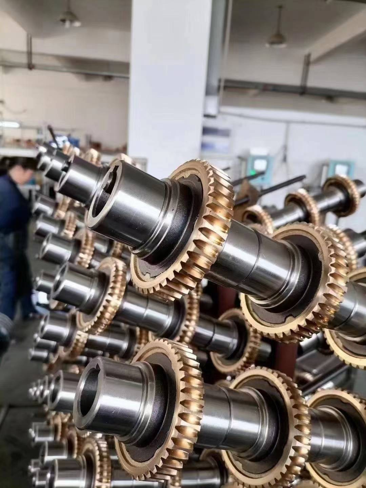

The worm wheel material is an important consideration when choosing a worm gearbox. Buyers often encounter terms such as aluminum bronze, tin bronze and cast bronze—but the terms do not describe the same thing. Understanding the distinction helps you compare gearbox specifications more accurately.
1. Aluminum Bronze
Aluminum bronze is a copper-based alloy with aluminum as its main alloying element. Certain grades offer high strength and good corrosion resistance and are used for worm wheels.
However, higher material strength does not automatically mean better gearbox performance. The specific alloy grade must suit the operating conditions and the mating worm. Contact pattern, worm finish, lubricant, temperature and load can be just as important as the broad alloy name.
2. Tin Bronze
Tin bronze is a copper-based alloy containing tin. Specific grades, such as C90700, are used in worm gears.
Tin bronze is a common option for bronze worm wheels, but performance depends on the exact composition, casting quality, machining accuracy and lubrication. The name “tin bronze” alone does not fully describe the quality of a finished component.
3. What Does “Cast Bronze” Mean?
Cast bronze describes bronze shaped by pouring molten metal into a mold. It refers to the manufacturing process rather than one specific alloy composition.
Both aluminum bronze and tin bronze can be cast. Therefore, a specification that only states “cast bronze” is incomplete for comparing materials. Ask the supplier for the alloy grade and the applicable material standard.
| Term | What it describes | What to request for comparison |
|---|---|---|
| Aluminum bronze | A copper-alloy family containing aluminum | Exact grade, standard and suitability for the mating worm and duty |
| Tin bronze | A copper-alloy family containing tin | Exact grade, chemistry, casting and machining information |
| Cast bronze | A process in which molten bronze is poured into a mold | The bronze alloy grade and the applicable material standard |
How to Choose the Right Worm Wheel Material
When comparing worm gearboxes, consider:
- The exact bronze alloy grade
- Rated output torque and operating speed
- Daily operating hours and load conditions
- Lubricant requirements and operating temperature
- Casting quality and gear machining accuracy
Avoid judging a worm wheel only by its color or a general material description. A reliable gearbox selection considers the complete gearset and operating duty.
Conclusion
Aluminum bronze and tin bronze describe alloy families, while cast bronze describes how a component is manufactured. Choosing the right worm wheel requires a clear material specification and a gearbox rating suited to the application.
Contact SMK Transmission with your motor power, required ratio and operating conditions to discuss a suitable worm gearbox.
Frequently Asked Questions
Is cast bronze a specific alloy?
No. It describes a casting process. Both aluminum bronze and tin bronze may be produced by casting.
Is aluminum bronze always better than tin bronze for a worm wheel?
No. The correct choice depends on the exact alloy, mating worm, speed, load, temperature and lubricant.
What should I request when a specification says “cast bronze”?
Request the exact alloy grade, applicable material standard, rated gearbox torque and the required operating conditions.